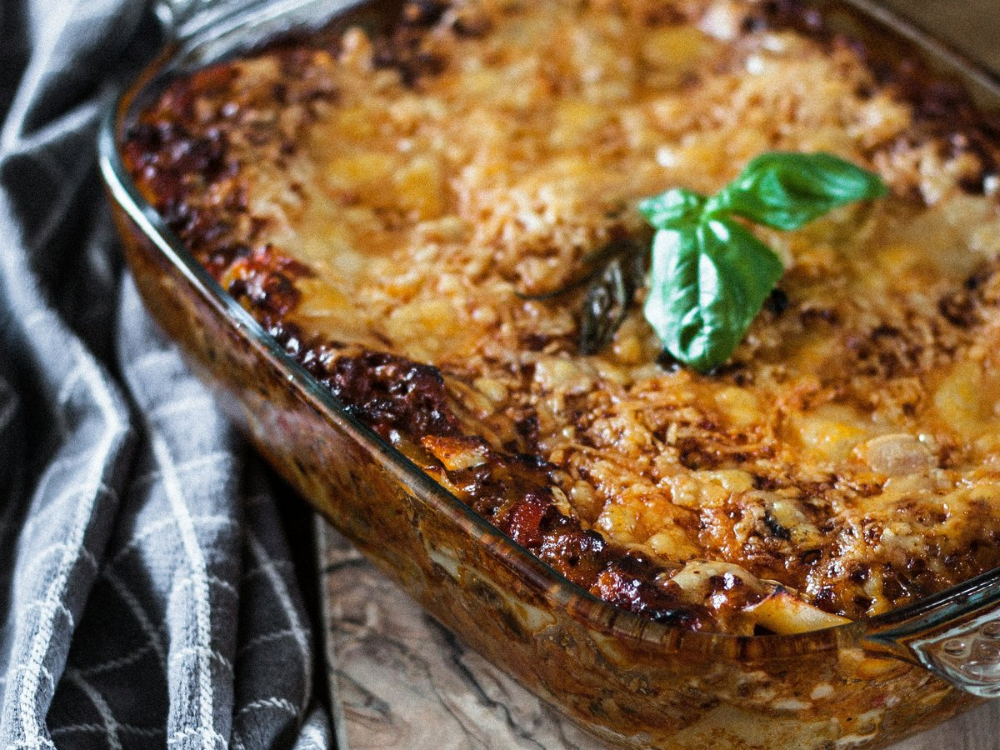

CARNET PERSO
Recettes
Au fil de ce qui passe en cuisine, une fiche à la fois.
-

Tartare de boeuf coupé au couteau
Viande décongelée, taillée finement, sauce classique
-

Pâtes à la carbonara
Lardons, œufs, parmesan, la version classique italienne
-

Moules au bleu (Roquefort)
Sauce crémeuse au fromage bleu, fondante et corsée
-

Sauce César
Onctueuse et bien relevée, pour salade ou en dip
-

Lasagnes végétariennes aux haricots rouges
Façon chili, sauce épicée et béchamel maison
-

Bigorneaux
Cuits à l'eau salée aux herbes, se dégustent nature au citron